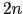
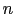
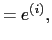
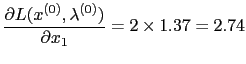
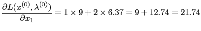
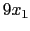
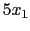

Next: Using OSInstance Methods: High
Up: Using OSInstance Methods: Low
Previous: First Derivative Reverse Sweep
Contents
In order to calculate second derivatives using reverseAD forward sweeps of order 0 and 1 must have been completed. The call to reverseAD(2, vlambda) will return a vector of dimension  where  is the number of variables. If the zero-order forward sweep is forward(0,x0) and the first-order forward sweep is forwardAD(1, x1) where x1
 then the return vector z = reverseAD(2, vlambda) is
where
For example, the following calls will calculate the third row (column) of the Hessian of the Lagrangian.
x0[0] = 1;
x0[1] = 5;
x0[2] = 5;
osinstance->forwardAD(0, x0);
x1[0] = 0;
x1[1] = 0;
x1[2] = 1;
osinstance->forwardAD(1, x1);
vlambda[0] = 1;
vlambda[1] = 2;
vlambda[2] = 1;
osinstance->reverseAD(2, vlambda);
This returns
The reason that

and not

is that the terms  in the objective and  in the first constraint
are captured in the linear section of the OSiL input and therefore do not appear as a nonlinear term in <nonlinearExpressions>. Again, forwardAD and reverseAD only operate on variables and terms in either the <quadraticCoefficients> or <nonlinearExpressions> sections.
Next: Using OSInstance Methods: High
Up: Using OSInstance Methods: Low
Previous: First Derivative Reverse Sweep
Contents
Kipp Martin
2008-01-16